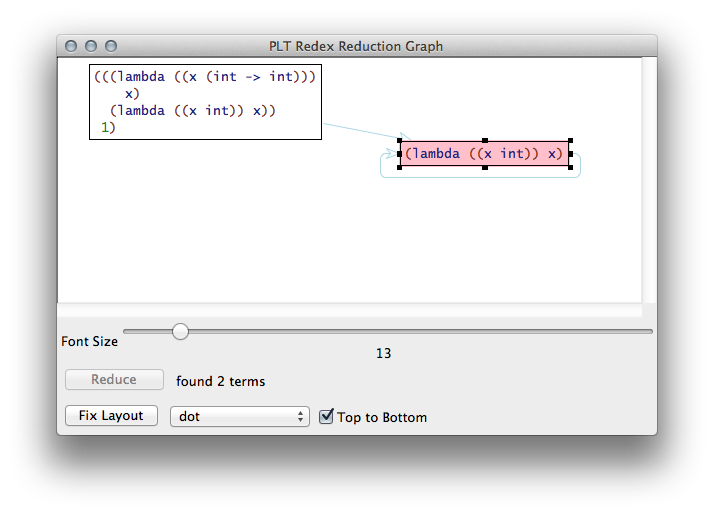

6.2.900.4
6 Types and Property Testing
Goals |
— |
— |
— |
6.1 Types
Here is a typed variant of the Lambda language:
(define-language TLambda (e ::= n + x (lambda ((x_!_ t) ...) e) (e e ...)) (t ::= int (t ... -> t)) (x ::= variable-not-otherwise-mentioned)) (define lambda? (redex-match? TLambda e)) (define e1 (term (lambda ((x int) (f (int -> int))) (+ (f (f x)) (f x))))) (define e2 (term (lambda ((x int) (f ((int -> int) -> int))) (f x)))) (define e3 (term (lambda ((x int) (x (int -> int))) x))) (module+ test (test-equal (lambda? e1) #true) (test-equal (lambda? e2) #true) (test-equal (in-TLambda? e3) #false))
6.2 Developing Type Judgments
Like metafunctions and reduction relations, type judgments are developed by working out examples, formulating tests, and then articulating the judgment rules:
; (⊢ Γ e t) – the usual type judgment for an LC language (define-extended-language TLambda-tc TLambda (Γ ::= ((x t) ...))) (module+ test (test-equal (judgment-holds (⊢ () ,e1 (int (int -> int) -> int))) #true) (test-equal (judgment-holds (⊢ () ,e2 t)) #false) (displayln (judgment-holds (⊢ () ,e1 t) t)) (displayln (judgment-holds (⊢ () ,e2 t) t))) (define-judgment-form TLambda-tc #:mode (⊢ I I O) #:contract (⊢ Γ e t) [----------------------- "number" (⊢ Γ n int)] [----------------------- "+" (⊢ Γ + (int int -> int))] [----------------------- "variable" (⊢ Γ x (lookup Γ x))] [(⊢ (extend Γ (x_1 t_1) ...) e t) ------------------------------------------------- "lambda" (⊢ Γ (lambda ((x_1 t_1) ...) e) (t_1 ... -> t))] [(⊢ Γ e_1 (t_2 ... -> t)) (⊢ Γ e_2 t_2) ... ------------------------------------------------- "application" (⊢ Γ (e_1 e_2 ...) t)])
Here are the necessary auxiliary functions:
; (extend Γ (x t) ...) add (x t) to Γ so that x is found before other x-s (module+ test (test-equal (term (extend () (x int))) (term ((x int))))) (define-metafunction TLambda-tc extend : Γ (x t) ... -> Γ [(extend ((x_Γ t_Γ) ...) (x t) ...) ((x t) ...(x_Γ t_Γ) ...)]) ; (lookup Γ x) retrieves x's type from Γ (module+ test (test-equal (term (lookup ((x int) (x (int -> int)) (y int)) x)) (term int)) (test-equal (term (lookup ((x int) (x (int -> int)) (y int)) y)) (term int))) (define-metafunction TLambda-tc lookup : Γ x -> t [(lookup ((x_1 t_1) ... (x t) (x_2 t_2) ...) x) t (side-condition (not (member (term x) (term (x_1 ...)))))] [(lookup any_1 any_2) ,(error 'lookup "not found: ~e" (term x))])
6.3 Subjection Reduction
Let’s say we define a truly broken (standard) reduction relation for
TLambda:
(define -> (reduction-relation TLambda #:domain e (--> e (lambda ((x int)) x))))
With trace, we can quickly see that paths in almost any term’s
reduction graph do not preserve types:
(traces -> (term (((lambda ((x (int -> int))) x) (lambda ((x int)) x)) 1)) #:pred (lambda (e) (judgment-holds (⊢ () ,e int))))
The #:pred keyword argument supplies a Racket function that judges
whether the intermediate expression type checks, using our type judgment
from above.

For simple “type systems,” redex-check can be used to test a
true subject reduction statement. If it worked, it would work roughly like
this:
(redex-check TLambda #:satisfying (⊢ () e t) ; run for n steps, recheck type (displayln (term e)) #:attempts 3)
But getting this done, is future work.
Rumor has it that Burke will graduate when he’s done with this part for redex-check.